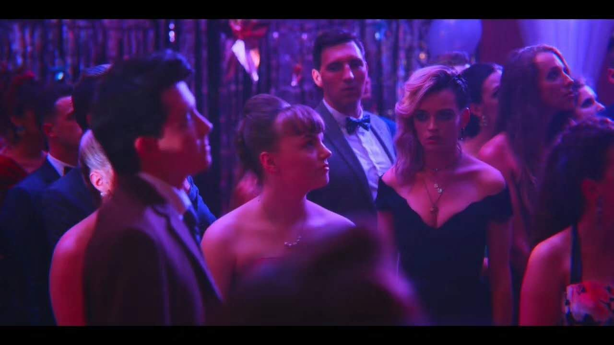
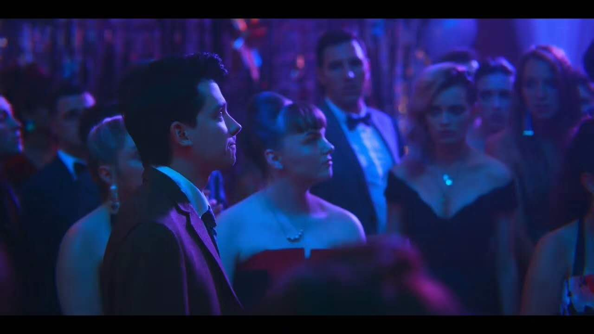

Life is strange.
|  |
|  |
|
1.民风淳朴哥谭市 人才辈出阿卡姆 2.命里有时终须有 命里无时落降头 3.你这跟胡说八道有区别吗 4.一段爱情是否长久，要看有没有共同利益。 5.科学就像是性，它会带来一些结果，但那并非我们去做的理由。 6.这个世界，勇气只能帮助你面对问题，却不能解决问题。 7.那年日本地震您家屯盐了么？吃完了么？您能离我远点么。 8.恨不知所起，深入骨髓，是最冷的人性。 9.你对自己的语言组织能力没有信心才会讲粗口。 10.我爱学习，学习爱我。（I love study，study fucks me） 11.强扭的瓜虽然不甜，但解渴。 12.逃避一点用也没有，但是很爽。 13.自己都照顾不好怎么照顾别人。 14.维他柠檬茶，爽过吸大麻。维他入我心，忘记可卡因。 15.祝天下有情人同归于尽 16.喜不喜欢，合不合适，能不能在一起，这是三件事情。 17.你最好把上一条中的三件事弄成一件事。 18.天地不仁以万物为刍狗。 19.其实真正的痛苦永远是说不出来的。能说出来的痛苦，远远没有达到最深的痛苦。 20.你想要啊？悟空，你要是想要的话你就说话嘛，你不说我怎么知道你想要呢，虽然你很有诚意地看着我，可是你还是要跟我说你想要的。 21.根据28法则，世界上8成的人，只是普通人。 22.开心是一天，不开心又是一天。那就不开心啊！为什么要开心！ 23.思考是很痛苦的。 24.关公面前耍大刀，银行门口卖切糕。 25.世界就是一个巨大的舞台，我们都要他妈的好好演。 26.嘘寒问暖不如打笔巨款 27.人们总会看到自己想看到的，被误解是表达者的使命。 28.坚强挫于内部，痛苦莫过回忆。 29.命运对勇士低语：「你无法抵御风暴」 勇士低声回应：[我就是风暴] 30.我看众人皆傻叉，料众人看我亦如是，恨向来都比爱容易。 31.人不能为了尊严，连钱都不要。 32.怒从心中起，恶向胆边生。 33.我本三尺微命，一介书生，寄身于天地尚且难保自身冷暖，又谈何心怀天下，志存高远。 34.不要相信黑夜 35.触摸你的身体，强暴你的灵魂。 36.追求追求，最后的落点在求。 37.十年生死两茫茫，不思量，自难忘。千里孤坟，无处话凄凉。纵使相逢应不识，尘满面，鬓如霜。 38.好看的皮囊三百多块，有趣的灵魂五千一晚。 39.谈个恋爱就想牵手，那结婚了岂不是要上床？ 40.我们应该解决问题，而不是解决提出问题的人。 41.我从不尝试用语言去改别人的观点。我与人争论，只为了解观点有何不同。 42.生活真是个bad game 43.血液集中在脑部，就很难集中在前列腺，也许是这样吧，思考理性的时候，说话往往很无趣，因为他在思考很多责任。 44.人一般不会因为你爱的很努力，从不爱你变成爱你，最多就是觉得你对她好，她愿意跟你过。 45.吃屎的人是下等人，但是如果他吃屎的原因是因为有人给他1000万，那我能容忍这个下等人。 46.若教眼底无离恨，不信人间有白头。 47.人生在世，不过是为了一日三餐这两件事。 48.你以为叶孤城和西门吹雪的剑不出鞘，你就打得过他们了吗？ 49.忍一时得寸进尺 退一步变本加厉 50.希望只有一个，如果给了你，我不就没有了？ 51.火焰在床上、窗上变幻着色彩！ 52.再穷穷不过三代，因为不到三代就绝种了。 53.我敬佩知世故却不世故的人，但我不愿成为这种人。 54.好好照顾自己，记得按时喝酒，不舒服多抽烟，每天熬夜，记得多吃夜宵，早饭不要经常吃，天冷了穿凉鞋，少穿双袜子，还有每天吃包辣条，一个人好好照顾自己，少吃饭，过马路别忘了玩手机，坐车别忘了把头伸出窗外 55.恶意不会消散，只会不断蔓延。 56.傻逼也不是因为进了学生社团才变得傻逼的。 57.在崩溃的边缘大鹏展翅。 58.说你又不听，听又不懂，懂又不做，做你又做错，错又不认，认又不改，改你又不服，不服你又不说，要我怎么办？——《左手》 59.If your brain is simple enough to be understand, you will be so stupid that you can not understand it! 60.凡是过去，皆为序曲。——莎士比亚 61.Not even wrong 你的论文连可证伪性都不具有。——Wolfgang E.Pauli 沃尔夫冈·泡利(实验装置的破坏者) 62.和氏之璧，不饰以五彩。 隋侯之珠，不饰以银黄。 63.生活很简单，只是很艰难。 64.一瞬间如释重负，一转头心如刀绞。 65.你开心你喜欢那就是爱情。 66.人际关系是化学反应，一旦起了作用之后就再也回不去了。 67.风调雨顺萧敬腾，国泰民安张学友 68.有时现实世界比虚构作品更荒诞。虚构是在一定逻辑下进行的，而现实往往毫无逻辑可言。 69.They taught me the world only makes sense if you force it to.——Batman 70.你我之间的AT力场比较强。(硬核ACG) 71.-你爱我吗？ -我不爱你妈。 72.-为什么十几度的天气这么冷 -因为你没有人疼 73.我有一句粗口不知当讲不当讲。 74.间歇性踌躇满志，持续性混吃等死。 75.忙着活，忙着死。 76.生而为人，我很抱歉。 但，来都来了，我得开心。 77.你的位置可以轻而易举地被取代，不只事业，也包括爱情。 78.有人疼，有人爱，就可以任性啊。 79.我的能力跟不上我的年纪。 80.贫居闹市无人问，富在深山有远亲。 81.春色满园关不住，一支红杏出墙来。 82.爱是一种能力，而不是一种感情。——《爱的艺术》 83.一往情深，再而衰，三而竭。彼竭我盈，故克之。 84.当我们在谈论xx的时候，我们在说什么？ 85.厌恶、或是热爱生活……从来都只是人类自己的主观选择和体验而已。若要说这世上真有什么的客观存在的痛苦，那也是人与人之间彼此影响而导致的。 86.美好的爱情是通过对方看到大千世界，糟糕的爱情是大千世界触手可及却只看到对方。 87.如果遗憾是一种美，那也唯有内心强大的人才真正懂得去欣赏。 88.我们终其一生，就是要摆脱别人的期待，找到真正的自己。——《无声告白》 89.成年人的崩溃是从借钱开始的。 90.人要懂得去尊重那些值得尊重的人、并尊重那些人的选择；哪怕你自认为有着比他们更高明的看法，哪怕他们所做的事在你看来徒劳无益、甚至是在自取灭亡。 91.你是不是可以去停止一下心跳 92.爱，讲是没有用的，做啦。 93.遇事不决，量子力学。 94.我向来不惮以最坏的恶意揣测中国人，然而我还不料，也不相信竟会下贱凶残到这地步。——鲁迅 95.人和人总是要分别的。 96.这世界上并没有感同身受这种事。 97.啊你又怎么了诶都是我的错你要这么想我也没办法多喝热水早点睡我打游戏了真的要这样吗那就算了吧 98.恋爱是一个相互试探对方底线的过程 99.如今，我们行色匆忙，哪里还去感受曾经那细致而微的痛苦。 100.如果连我都放弃了我，那还有谁能拯救我。 101.这个世界的千疮百孔，来自于所有人的合谋。 102.我还可以见到她，这不算传统意义上的离别。 103.我们在考察一件事情时，要靠自己的逻辑洞察力去分析，而不是听大家人云亦云 |